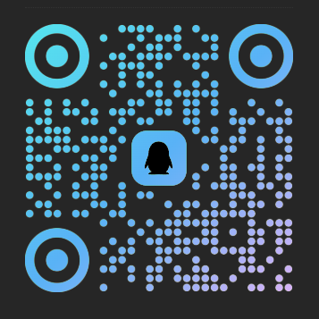

看到这里，或许我们已经认识了一点。留下一段感想、一个推荐，或者只是打声招呼。
写下感想、最近的发现或生活片段；每张纸条，都可以接着回一封。
正在连接公共留言墙…
有问题可以联系我，欢迎交流。
html2007jx
分享电脑知识、好用工具和有趣发现
1032176498

软件、网站、技巧和踩坑经验都欢迎分享。
关键词：分享 · 电脑 · 学习 · 成长 · 视角
若二维码失效，可添加左侧微信备注「进群」。